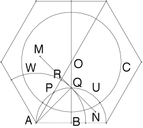

Nonlinear Tessellations
Construction
Step 3, part 3 proof

Because AR is the radius of the circle W, theis circle and AO are orthogonal.
But RQ is an arc of the circle W, so the arc RQ and the segment AO are orthogonal.
Return to
Step 3
.